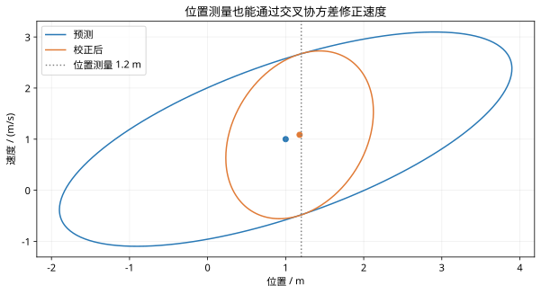

第 39 课：Kalman滤波的预测与校正
阶段 4 · 用一个完整数值循环理解 Kalman 增益、创新和后验协方差。
1. 先验与后验是同一时刻的两次判断
沿用 $x_k=Ax_{k-1}+Bu_{k-1}+w_{k-1}$、$z_k=Hx_k+v_k$。预测使用上一时刻的后验和已执行输入，校正使用当前测量。上标 $-$ 表示测量到来前，$+$ 表示测量融合后。
$$ \hat x_k^-=A\hat x_{k-1}^++Bu_{k-1},\qquad P_k^-=AP_{k-1}^+A^{\mathsf T}+Q. $$
预测阶段，即使没有新测量，状态仍按模型前进；过程噪声把新的不确定性加进来。
2. 创新告诉我们测量与预测差多少
$$ \nu_k=z_k-H\hat x_k^-,\qquad S_k=HP_k^-H^{\mathsf T}+R,\qquad K_k=P_k^-H^{\mathsf T}S_k^{-1},\qquad \hat x_k^+=\hat x_k^-+K_k\nu_k. $$
$S$ 是创新协方差。$K$ 把测量残差转换成状态修正，并不是一个总在 0 和 1 之间的标量；多状态、多测量时它是矩阵。
3. 完整手算一次位置与速度估计
采样间隔 1 s，状态为位置与速度，取
$$ A=\begin{bmatrix}1&1\\0&1\end{bmatrix},\quad H=\begin{bmatrix}1&0\end{bmatrix},\quad \hat x_0^+=\begin{bmatrix}0\\1\end{bmatrix},\quad P_0^+=I,\quad Q=0.1I,\quad R=0.25. $$
这里 $0.1I$ 只是各状态按其单位分别赋值的简化示例，不是普适物理噪声模型。无输入时：
$$ \hat x_1^-=\begin{bmatrix}1\\1\end{bmatrix},\quad P_1^-=\begin{bmatrix}2.1&1\\1&1.1\end{bmatrix}. $$
若当前位置测量 $z_1=1.2$，则
$$ \nu_1=0.2,\quad S_1=2.35,\quad K_1=\begin{bmatrix}0.893617\\0.425532\end{bmatrix},\quad \hat x_1^+=\begin{bmatrix}1.178723\\1.085106\end{bmatrix}. $$
虽然只测了位置，速度也得到修正，因为预测位置误差与速度误差具有非零协方差。
4. 协方差也必须校正
常用的 Joseph 形式为
$$ P_k^+=(I-K_kH)P_k^-(I-K_kH)^{\mathsf T}+K_kRK_k^{\mathsf T}. $$
本例得到
$$ P_1^+\approx\begin{bmatrix}0.223404&0.106383\\0.106383&0.674468\end{bmatrix}. $$
精确算术下它与简式 $(I-KH)P^-$ 等价；Joseph 形式更便于保持数值对称与半正定。程序中通常解线性方程，不显式求逆。
A=[1 1;0 1];H=[1 0];Q=.1*eye(2);R=.25;
x=[0;1];P=eye(2);z=1.2;
xm=A*x;Pm=A*P*A'+Q;
nu=z-H*xm;S=H*Pm*H'+R;K=(Pm*H')/S;
x=xm+K*nu;M=eye(2)-K*H;
P=M*Pm*M'+K*R*K';disp(x);disp(P);5. 交互：测量越吵，应该越相信它吗？
下面使用标量随机游走模型，专门观察 Q、R 与融合权重的关系；它不是上面二维例子的替代模型。
此演示需要 JavaScript。若没有显示，请检查浏览器设置。
6. 最优性的边界
线性、高斯、噪声统计准确的条件下，KF 给出条件均值及协方差。只保留二阶统计条件时，它是线性估计类中的最小均方误差估计器。模型错误、异常值与未建模偏置都可能使结果失效。
图示核对

同一数值循环中的先验与后验协方差轮廓；测量使位置不确定性下降，并改变速度估计。